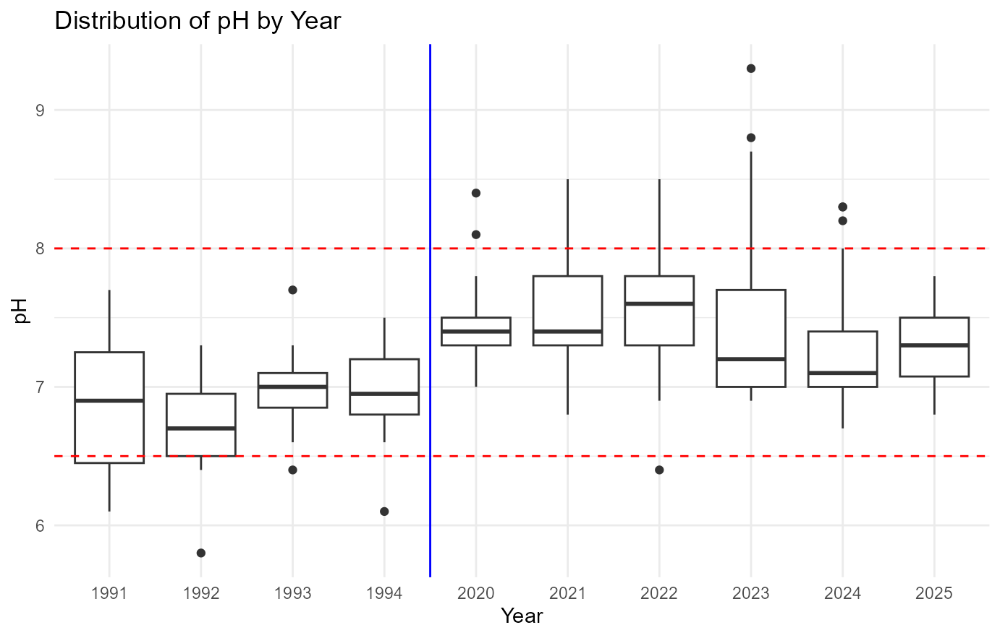

yarraclean: Yarra River Water Quality
yarraclean.RmdInstallation
You can install the package directly from GitHub using:
# Install and load the package
remotes::install_github(
"ETC5523-2025/assignment-4-packages-and-shiny-apps-HendricksonJY",
build_vignettes = TRUE
)
library(yarraclean)note: ensure you have the remotes package installed.
Overview
this vignette introduces the yarra_river_data dataset
included in the yarraclean package.
The dataset has been cleaned, filtered, and reshaped to support:
- exploratory visualization and analysis
- statistical & predictive modelling
- interactive applications
Each row in the dataset represents a measurement at a monitoring site and time, with variables for pH, turbidity, salinity, total nitrogen, and water termperature.
data("yarra_river_data", package = "yarraclean")
dplyr::glimpse(yarra_river_data)
#> Rows: 225
#> Columns: 7
#> $ site_id <dbl> 229143, 229143, 229143, 229143, 229143, 229143, 2291…
#> $ datetime <dttm> 1991-01-08 13:50:00, 1991-02-12 09:35:00, 1991-03-1…
#> $ nitrogen_total <dbl> NA, NA, NA, NA, NA, NA, NA, NA, NA, NA, NA, NA, NA, …
#> $ ph <dbl> 7.1, 7.0, 6.2, 6.7, 7.7, 6.9, 6.1, 6.7, 0.0, 7.7, 7.…
#> $ salinity_ec25 <dbl> 230, 370, 390, 160, 200, 160, 250, 0, 170, 150, 200,…
#> $ turbidity <dbl> 35, 36, 18, 20, 17, 79, 0, 41, 45, 17, 88, 130, 27, …
#> $ water_temperature <dbl> 21.0, 21.4, 22.2, 16.8, 17.5, 12.2, 11.0, 10.2, 12.0…Data Dictionary
| Variable | Type | Units | Description |
|---|---|---|---|
| site_id | character | — | Monitoring site identifier. |
| datetime | POSIXct | — | Timestamp of the observation (local time). |
| ph | numeric | unitless | Acidity/alkalinity (0–14). Healthy rivers ~6.5–8.5. |
| salinity_ec25 | numeric | µS/cm | Electrical conductivity at 25°C; proxy for salinity/dissolved ions. |
| turbidity | numeric | NTU | Cloudiness from suspended particles; higher = murkier. |
| nitrogen_total | numeric | mg/L | Total nitrogen; nutrient linked to algal growth and eutrophication. |
| water_temperature | numeric | °C | Water temperature; affects dissolved oxygen and species tolerance. |
Example: pH by Year (Boxplot)
The following example visualizes pH levels by year using a boxplot. Reference lines at 6.5 and 8.0 indicate the commonly accepted healthy range.

Raw data source
The cleaned dataset in the package is derived from the original raw monitoring data published by the Victorian Department of Energy, Environment, and Climate Action via the Water Monitoring Information System (WMIS).